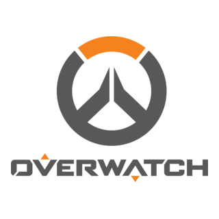
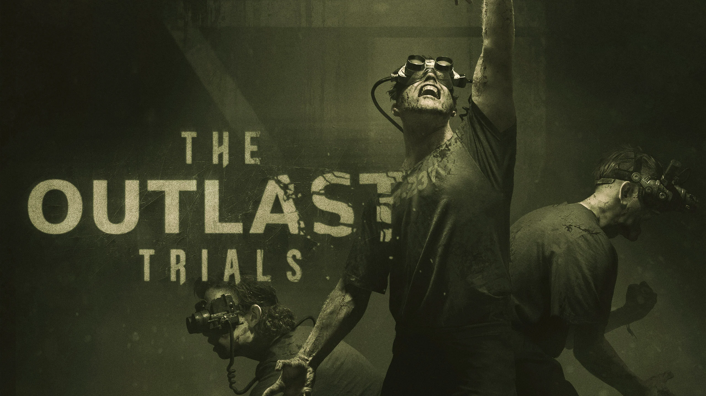

Overwatch
I have been playing Overwatch since it first released (2016). I've seen the game grow through its many changes, and witnessing the addition of a character that ended up breaking the game. I have met a lot of people on this game and it has become an importnant part of me. I enjoy playing this game because with a wide range of characters, comes with a wide range of ways I can play the game. In addition, I enjoy the community. The community is very diverse and in some matches people wont take it so seriously. Overall, I enjoy the Overwatch community and how silly it can be. The lore is really interesting, considering that the game takes place after The Omnic Crisis (a huge war in game that has divided the people in the Overwatch story).

The Outlast Trials
About a few months ago, one of my friends have recommended that I get this game. At first, I was a bit hesitant on buying the game because I wouldn't be so sure if I would like the game. I've only seen some gameplay from the same series but a different game. As hesitant as I was, I was still curious to know how the game would be, so I decided to get it. I made the right decision getting it, as I found it to be one of the most fun survival horror games that I've played. Some background info on the game, you are a reagent placed in the Murkoff Facility, being trained to become a sleeper agent through horrific testing. This game does have jumpscares, but not as frequent as you'd expect in a horror genre. The main mode is coop, but you have this option to have other players become a killer in your mission. Personally, I dont have that option as I just want to play the game without the competetive nature as I find it more enjoyable to play it that way.